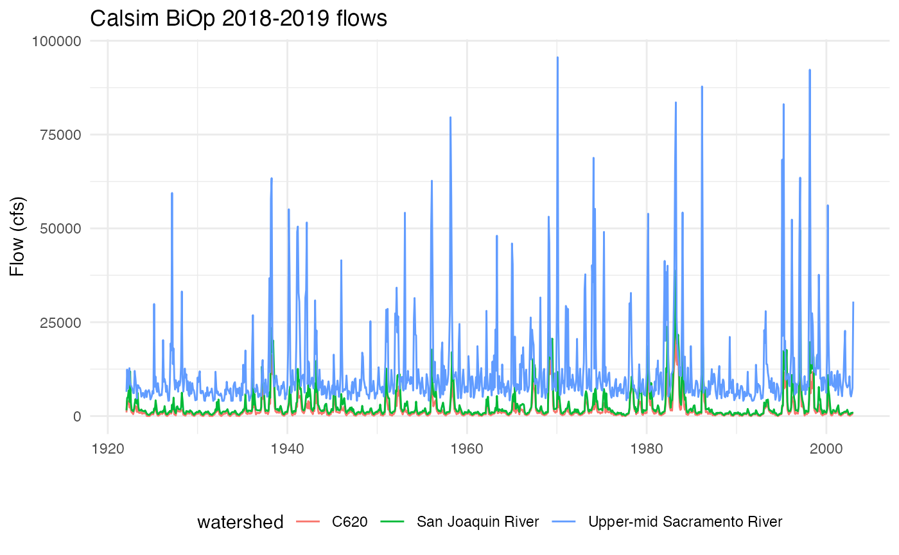
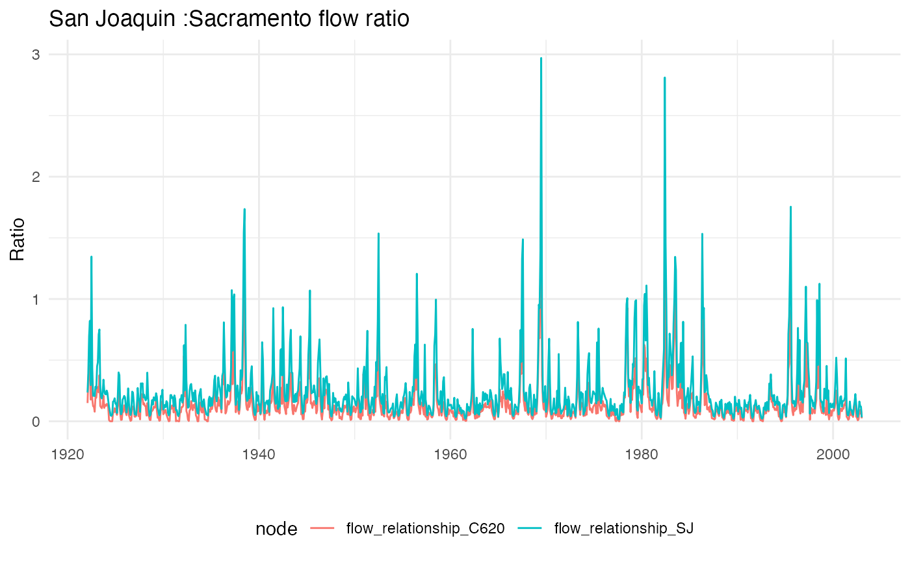
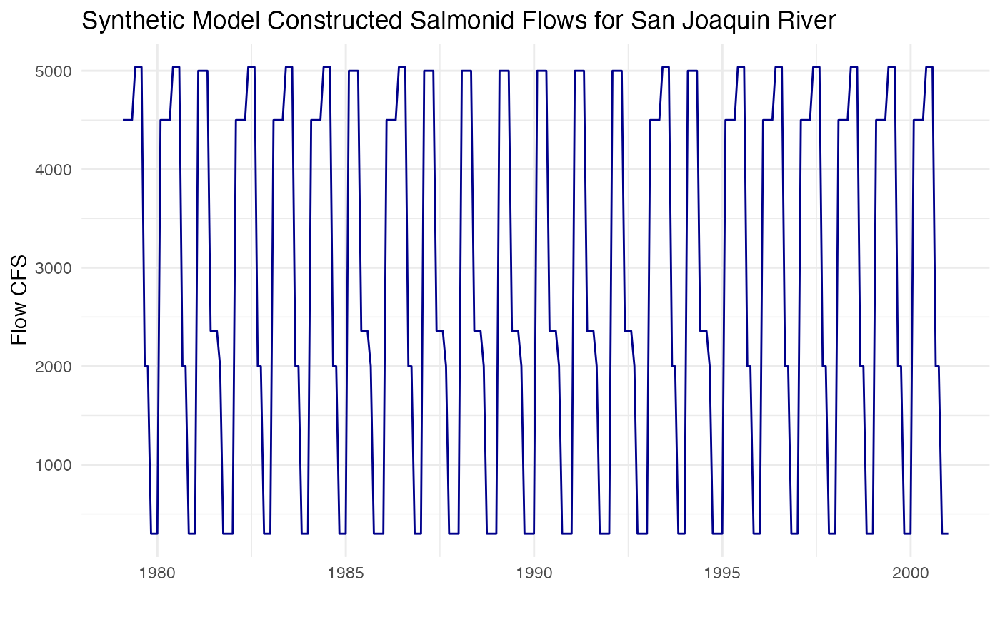

EFF_SJ.RmdThe Reorienting to Recovery Structured Decision Making group proposed a effective functional flow (EFF) scenario. To date, there is no available CalSIM EFF run so we cannot model full EFF on the entire system. This document outlines our approach to piloting an EFF on the San Joaquin River constructed to maximize salmonid survival.
This analysis is based on the methods for the Sacramento River EFF
(vignettes/EFF.Rmd) and we do not reiterate the methods in
detail here except to explain where they deviate for the San
Joaquin.
A synthetic EFF hydrograph was developed for the Sacramento River using the following high-level steps:
Using the Natural Flows Database, California Environmental Flows Framework, and Modeling Functional Flows in California’s Rivers as a basis, a monthly hydrograph was created to mimic unimpaired historical flows
Following this initial exercise, our synthetic hydrograph was modified to prioritize maximizing salmonid survival by accounting for flow-to-survival thresholds as outlined in Michel 2021.
Because this initial approach did not maximize habitat for salmon, the hydrograph was further modified to a) maximize spawning habitat from Oct-Dec as defined here, b) set a base flow for dry season (Aug-Sep) juvenile survival informed by the Natural Flows database, c) optimize flows during the last three months of outmigration (May-July) using Michel 2021, and d) utilize additional flows for maximizing floodplain habitat from Jan-April.
Our goals for developing an EFF hydrograph for the San Joaquin River were to maximize habitat and survival and reduce minimum flows when salmonids are not in the system.
In order to adapt the Sacramento EFF methodology, we need a flow-habitat relationship (found here) and a flow-survival relationship for salmonids like those outlined in Michel 2021. Steps include:
We compared the flows for the Upper-mid Sacramento River
(Wilkins Slough) and San Joaquin River (Vernalis flows)
produced by the 2019 BiOp and calculated a monthly ratio of San Joaquin
flows to Upper-mid Sacrmaento flows
(San Joaquin River flows / Upper-mid Sacramento River flows).
We then averaged that monthly proportion over migratory months
(May-August) and years modeled in the DSM
(1980:2000). We used this proportion to scale the flow
values required for survival rates of 3%,
18.9%, and 50.8% for the San Joaquin.
We added in an additional node (C620, below the Merced
confluence) for comparison.

| Survival | Sacramento Flow Threshold (cfs) | San Joaquin Flow Threshold (cfs) | C620 Flow threshold (cfs) |
|---|---|---|---|
| 3.0 | 4279 | 1733 | 942 |
| 18.9 | 10712 | 4339 | 2359 |
| 50.8 | 22872 | 9265 | 5038 |
The table below shows monthly flow EFF for a wet year model EFF on the San Joaquin River. This table was constructed using the Natural Flows database and model survival thresholds.
| month | flow_cfs | description |
|---|---|---|
| Jan | 4500 | Utilize remaining water for FP habitat |
| Feb | 4500 | Utilize remaining water for FP habitat |
| Mar | 4500 | Utilize remaining water for FP habitat |
| Apr | 4500 | Utilize remaining water for FP habitat |
| May | 5038 | Optimize for migratory survival (5,038 for mig surv ~50%) |
| Jun | 5038 | Optimize for migratory survival (5,038 for mig surv ~50%) |
| Jul | 5038 | Optimize for migratory survival (5,038 for mig surv ~50%) |
| Aug | 2000 | Set at 2000 to incrase acreage for avaliable for Juv flows |
| Sep | 2000 | Set at 2000 to incrase acreage for avaliable for Juv flows |
| Oct | 300 | Optimize for spawning habitat based on flow area WUA |
| Nov | 300 | Optimize for spawning habitat based on flow area WUA |
| Dec | 300 | Optimize for spawning habitat based on flow area WUA |
The plot below shows the CalSIM modeled flows for the Sacramento River of an existing representative wet year: 1983. 1983 has the median water year index as provided by DWR out of all the “Wet” and “Above Normal” years within our model time frame.

The table below shows the annual total volume of water needed for each flow scenario. The wet year EFF uses more water than the Natural Flows database EFF and then the representative CalSIM year.
| Scenario | Annual Acre Ft Water |
|---|---|
| Natural flows Database flows | 8,742,523 |
| Proposed Model EFF | 2,294,932 |
| calsim | 8,038,178 |
The table below shows monthly flow CFS for a dry year model EFF on the Sacramento River. This table was constructed using the Natural Flows database and model survival thresholds.
| month | flow_cfs | description |
|---|---|---|
| Jan | 5000 | Utilize remaining water for FP habitat |
| Feb | 5000 | Utilize remaining water for FP habitat |
| Mar | 5000 | Utilize remaining water for FP habitat |
| Apr | 5000 | Utilize remaining water for FP habitat |
| May | 2359 | Keep high for migratory survival (2,359 for mig surv ~20%) |
| Jun | 2359 | Keep high for migratory survival (2,359 for mig surv ~20%) |
| Jul | 2359 | Keep high for migratory survival (2,359 for mig surv ~20%) |
| Aug | 2000 | Set summer base flow to 300 based on Natural flows tool and to incrase acreage for avaliable for Juv flows |
| Sep | 300 | Set summer base flow to 300 based on Natural flows tool and to incrase acreage for avaliable for Juv flows |
| Oct | 300 | Optimize for spawning habitat based on flow area WUA |
| Nov | 300 | Optimize for spawning habitat based on flow area WUA |
| Dec | 300 | Optimize for spawning habitat based on flow area WUA |
The plot below shows the CalSIM modeled flows for the San Joaquin River of an existing representative dry year: 1959. 1959 has the median water year index as provided by DWR out of all the “Critical”, “Dry”, and “Below Normal” years within our model time frame.

The table below shows the annual total volume of water needed for each flow scenario. The dry year EFF uses less water than the Natural Flows database EFF and than the representative CalSIM year.
| Scenario | Annual Acre Ft Water |
|---|---|
| Natural flows Database flows | 2,253,457 |
| Proposed Model EFF | 1,827,844 |
| calsim | 484,113 |
In order to incorporate these EFF into the model data inputs we combined wet and dry years to make a synthetic time series over the full 20 year period. We started by classifying years as “Dry” or “Wet” based on DWR water year type classifications. All “Dry”, “Critical”, or “Below Normal” years fall into the “Dry” category and all “Wet” or “Above Normal” years fall into the “Wet” category.
The plot below shows this synthetic time series for the San Joaquin River over the 20 year simulation period.
